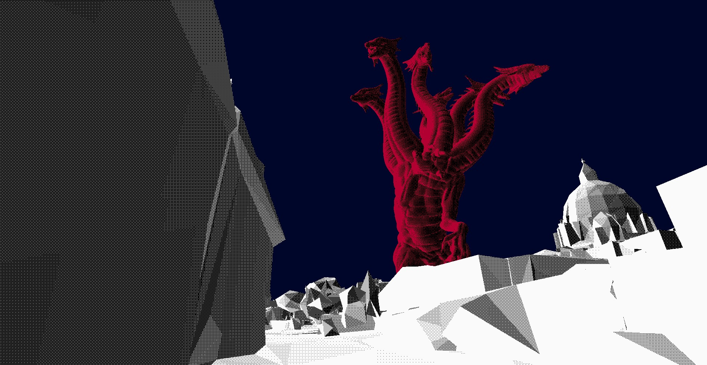
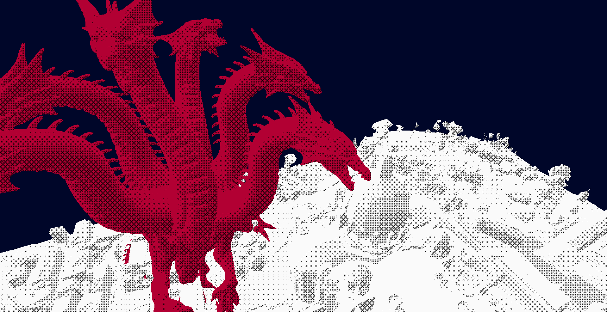
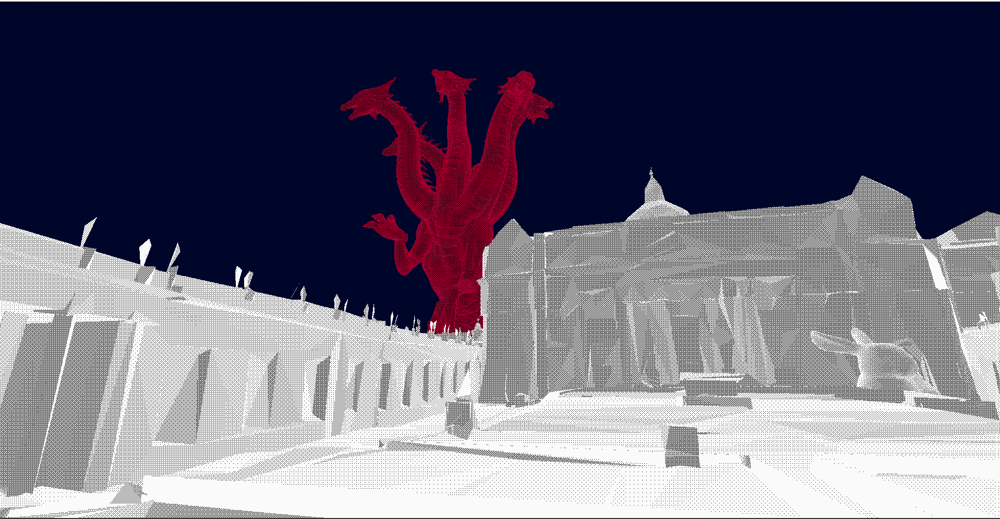
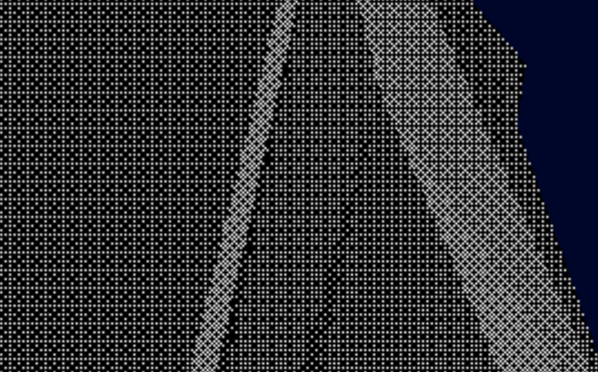

3D interactive Computer Graphics scene that implements dither shading. The technology I chose to implement was a shader design based on the game Return of the Obra Dinn. The shading technique, called Dithering, was originally developed for print to trick the eyes into seeing a multitude of shades while only using two colors.




Great in-depth look at a similar project by NBAyunjay: GitHub Project
A great tutorial describing the underlying concepts: Medium Tutorial
An overview of the technique and what it can be used for: Maxime Heckel's Blog
Wikipedia page covering Bayer matrices and other dithering implementations: Wikipedia: Dither
Book Reference: Halftone Dithering Method from Jonas Gomes, Image Processing for Computer Graphics, 1997